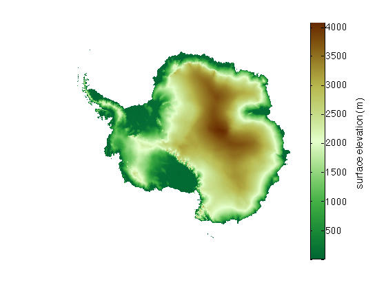
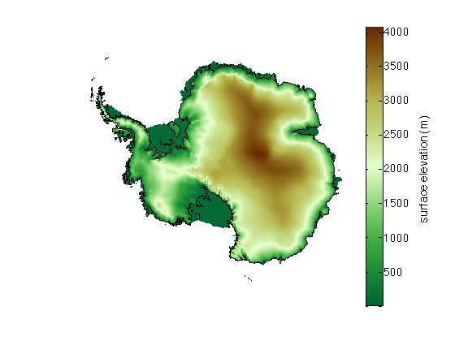
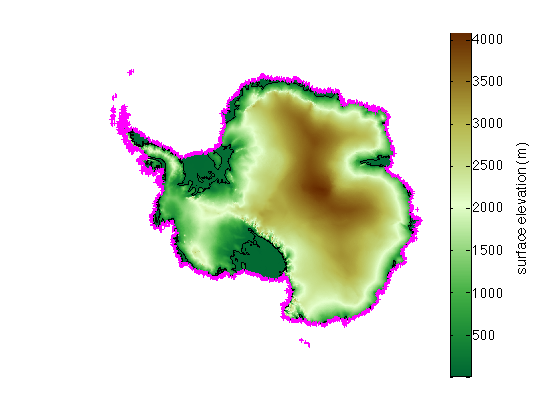
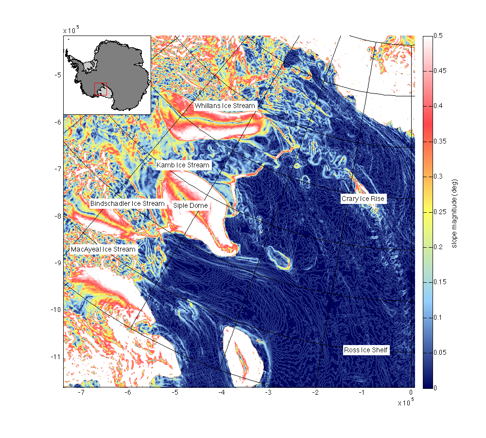
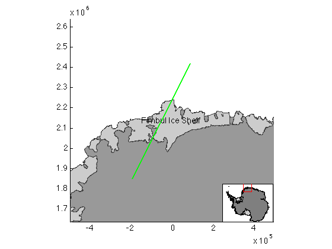
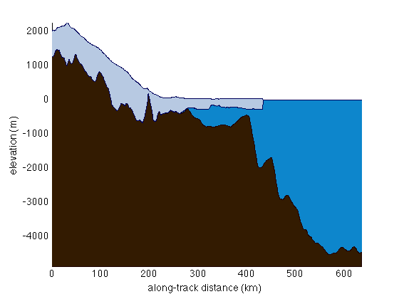

An overview of Bedmap2 tools
Below is a brief overview of the Bedmap2 Toolbox for Matlab. Information about the Bedmap2 project can be found here and here.
Contents
Toolbox Description
The Bedmap2 Toolbox for Matlab is a plugin for the Antarctic Mapping Tools package for Matlab. These packages have been designed to make data analysis and plotting relatively painless for the novice Matlab user. This toolbox contains the following functions:
- bedmap2_download downloads Bedmap2 data.
- bedmap2 plots any Bedmap2 raster DEM elevations, uncertainty or coverage maps or masks, grounding lines, coast lines, and ice shelf outlines.
- bedmap2_data simply loads gridded Bedmap2 raster data. Data can easily be subset to a region of interest for faster loading and analysis.
- bedmap2_interp simply interpolates Bedmap2 data to a point, line, or grid given by geographic coordinates.
- bedmap2_profile plots elevation profiles of ice surface, ice thickness, and bed elevation.
- bedmap2_dist calculates the distance from any point(s) to the nearest ice shelf, coast, grounded ice, ocean, etc.
- outlineashelf outlines specific ice shelves by name.
Toolbox Requirements
The Bedmap2 Toolbox requires Antarctic Mapping Tools. Some functions require the Image Processing Toolbox, or Matlab's Mapping Toolbox, but I'm trying to move away from dependencies on licensed toolboxes.
Installation
First, get the Antarctic Mapping Tools package. Then you can either run bedmap2_download or simply download the Bedmap2 data yourself from here: https://secure.antarctica.ac.uk/data/bedmap2/bedmap2_tiff.zip
Example 1: Simple plotting
Create a map of Bedmap2 surface elevation:
bedmap2 'surface'
 Overlay a grounding line:
bedmap2 'grounding line'
 Add a thick magenta coast line:
bedmap2('coast','color','m','linewidth',3)
Add white surface elevation contours at 2000, 2500, and 3000 meters:
bedmap2('surfc','z',2000:500:3000,'color','w')
Example 2: Import and analyze data
The grounding line along the Siple Coast was mapped by Horgan and Anandakrishnan (2006) by examining the region of high surface slope which connects relatively flat floating ice shelf to fully-grounded ice. Here we create a plot of surface slope similar to their Figure 1.
First, surface elevations are imported into Matlab via the bedmap2_data function. By specifying a centerlat,centerlon, we can load only Bedmap2 data centered on the region of interest. The 400 tag specifies that at (centerlat,centerlon) will be loaded plus a 400 km buffer on all sides:
% Define a center location: [centerlat,centerlon] = scarloc('siple coast'); % Import data and calculate surface slope: [lat,lon,sfz] = bedmap2_data('surface',centerlat,centerlon,400); [dhdx,dhdy] = gradient(sfz/1000); % divide by dx = dy = 1000 m sfzslope = atand(hypot(dhdx,dhdy)); % surface slope in degrees
Now plot surface slopes. To match the color scheme of the original figure, I'm using my rgbmap function.
% Plot surface slopes: figure('position',[100 100 1000 900]) pcolorps(lat,lon,sfzslope) % plots surface slope data. cb = colorbar; rgbmap('dark blue','light blue','canary','light red','white') % Add a black grid and zoom to the region: graticuleps(-86:-79,180:10:230,'color','k') mapzoomps('siple coast','mapwidth',750,'inset','northwest','size',.2) % Add text labels formatted as shown in Horgan and Anandakrishnan (2006): places = {'Siple Dome','Whillans Ice Stream','Kamb Ice Stream',... 'Bindschadler Ice Stream','MacAyeal Ice Stream','Ross Ice Shelf',... 'Crary Ice Rise'}; scarlabel(places,'background','white') caxis([0 .5]); % sets colorbar limits ylabel(cb,' slope magnitude (deg) ')
Example 3: Estimate doomsday sea level rise
The Antarctic Ice Sheet will not dramatically collapse on the timescales of Hollywood box office hits, but that certainly doesn't stop us from wondering, What if it does? If we neglect glacial isostatic adjustment and a whole host of other important little details, we can estimate Antarctica's potential contribution to sea level rise using the relation given by Meier et al. (2007) whereby 1 Gt of water should lead to 1/362 mm change in sea level.
First, import data via bedmap2_data, then find how many meters of ice are above sea level for each pixel in the 6667 by 6667 data set, convert that to a mass of ice above sea level, then convert from mass to meters of sea level rise:
rho_ice = 917; % (kg/m^3) density of ice SLR_m_per_GT = .001/362; % (m/GT) sea level potential from Meier et al. thck = bedmap2_data('thickness'); bed = bedmap2_data('bed'); sfz = bedmap2_data('surface'); % Obtain an array of surface elevations where ice is present and grounded: GroundedIceSurface_m = sfz(thck>0 & (sfz-thck)==bed); % Obtain an array of bed elevations above sea level where ice is present: GroundedBedAboveSeaLevel_m = bed(thck>0 & bed>0); % Total ice volume above sea level, convert to km3: IceVolAboveSeaLevel_m3 = (sum(GroundedIceSurface_m) - ... sum(GroundedBedAboveSeaLevel_m))*1000^2; iceMassAboveSeaLevel = IceVolAboveSeaLevel_m3*rho_ice*1e-12; % GT SeaLevelRisePotential_m = iceMassAboveSeaLevel*SLR_m_per_GT
SeaLevelRisePotential_m = 57.8623
This value is in agreement with the 58 m reported by Fretwell et al. in the Cryosphere paper describing the Bedmap2 data set.
Example 4: Create profile views
Sometimes it's insightful to get a side view of an ice sheet. Consider Fimbul Ice Shelf, which is an interesting ice shelf because it overhangs the continental slope. Begin by mapping the area. To do so, initialize a 1000 km wide map around Fimbul Ice Shelf, plot ice shelves as patches, plot grounded ice as patches, and make the ocean blue, Then define and plot a transect along which we'll get a vertical elevation profile:
figure mapzoomps('fimbul ice shelf','mapwidth',1000,'inset','se') bedmap2('patchshelves','xy') bedmap2('patchgl','oceancolor',rgb('ocean blue'),'xy') % define transect: lat = [-73 -68]; lon = [-6.2 2]; plotps(lat,lon,'g','linewidth',2) % add a label: scarlabel('Fimbul Ice Shelf','fontangle','italic')
Get a profile along the transect given by lat,lon :
figure bedmap2_profile(lat,lon)
References
If this function is useful for you, please cite the following:
Fretwell, P., et al. "Bedmap2: improved ice bed, surface and thickness datasets for Antarctica." The Cryosphere 7.1 (2013). http://dx.doi.org/10.5194/tc-7-375-2013
Greene, C. A., Gwyther, D. E., & Blankenship, D. D. (2016). Antarctic Mapping Tools for Matlab. Computers & Geosciences. http://dx.doi.org/10.1016/j.cageo.2016.08.003
Author Info
This toolbox was created by Chad A. Greene of the University of Texas at Austin Institute for Geophysics (UTIG) in the boreal spring of 2013. The toolbox was turned into a plugin for Antarctic Mapping Tools in August of 2014, then partly rewritten as a tiff-based tool set in February 2015.